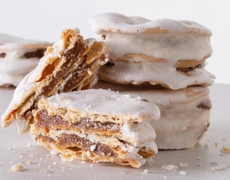

Tradicionales Alfajores Santafesinos:

Ir a la página de Contactos
Ingredientes:
Para la masa:
- 200 gramos de harina 0000
- 40 gramos de manteca blanda a temperatura ambiente
- 50 ml de agua
- 2 cucharadas de licor de anis o alcohol (de farmacia)
- 2 yemas
- 1 pizca de sal
Relleno:
- 500 grs de dulce de leche repostero
Baño de cobertura: Merengue
- 1 de clara de huevo
- 100 gramos de azúcar
- 100 gramos de azúcar impalpable
- jugo de 1 limón
<